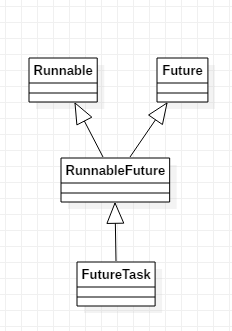
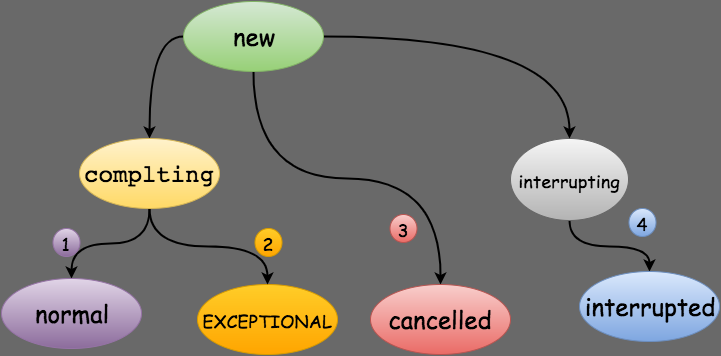

本节介绍FutureTask这种方式使用线程。其实不能算是创建线程。只能属于一种包装。
FutureTask组成部分 Callable接口 1 2 3 public interface Callable <V > V call () throws Exception ; }
Future接口 1 2 3 4 5 6 7 public interface Future <V > boolean cancel (boolean mayInterruptIfRunning) boolean isCancelled () boolean isDone () V get () throws InterruptedException, ExecutionException ; V get (long timeout, TimeUnit unit) throws InterruptedException, ExecutionException, TimeoutException ; }
Runnable接口 1 2 3 4 @FunctionalInterface public interface Runnable public abstract void run () }
RunnableFuture接口 1 2 3 public interface RunnableFuture <V > extends Runnable , Future <V > void run () }

FutureTask执行多任务计算的使用场景 1 2 3 4 5 6 7 8 9 10 11 12 13 14 15 16 17 18 19 20 21 22 23 24 25 26 27 28 29 30 31 32 33 34 35 36 37 38 39 40 41 42 43 44 45 46 47 48 49 50 51 52 53 54 55 56 57 58 59 60 61 62 63 64 public class FutureTaskForMultiCompute public static void main (String[] args) FutureTaskForMultiCompute inst =new FutureTaskForMultiCompute(); List<FutureTask<Integer>> taskList = new ArrayList<FutureTask<Integer>>(); ExecutorService exec = Executors.newFixedThreadPool(5 ); for (int i = 0 ; i < 10 ; i++) { FutureTask<Integer> ft = new FutureTask<Integer>(inst.new ComputeTask(i, "" +i)); taskList.add(ft); exec.submit(ft); } System.out.println("所有计算任务提交完毕, 主线程接着干其他事情！" ); Integer totalResult = 0 ; for (FutureTask<Integer> ft : taskList) { try { totalResult = totalResult + ft.get(); } catch (InterruptedException e) { e.printStackTrace(); } catch (ExecutionException e) { e.printStackTrace(); } } exec.shutdown(); System.out.println("多任务计算后的总结果是:" + totalResult); } private class ComputeTask implements Callable <Integer > private Integer result = 0 ; private String taskName = "" ; public ComputeTask (Integer iniResult, String taskName) result = iniResult; this .taskName = taskName; System.out.println("生成子线程计算任务: " +taskName); } public String getTaskName () return this .taskName; } @Override public Integer call () throws Exception for (int i = 0 ; i < 100 ; i++) { result =+ i; } Thread.sleep(5000 ); System.out.println("子线程计算任务: " +taskName+" 执行完成!" ); return result; } } }
通过这段简单的示例我们就可以知道
一次性创建多个任务和任务具体那个任务先完成之间没有任何顺序上的关系。
get方法会等待任务完成时候返回，其余时间进行阻塞。
所以利用这一点，我们可以设计一个场景，就是我们要对接服务端的多个接口，但是我们需要显示到一个ListView中，并且一次性显示完全。所以我们在一个线程中，利用一个线程池，添加多个FutureTask任务。等待所有结果返回之后我们进行合并到ListView的数据源中。
FutureTask原理 状态 1 2 3 4 5 6 7 8 private volatile int state;private static final int NEW = 0 ;private static final int COMPLETING = 1 ;private static final int NORMAL = 2 ;private static final int EXCEPTIONAL = 3 ;private static final int CANCELLED = 4 ;private static final int INTERRUPTING = 5 ;private static final int INTERRUPTED = 6 ;

有一点需要注意的是，所有值大于COMPLETING的状态都表示任务已经执行完成(任务正常执行完成，任务执行异常或者任务被取消)。
构造 1 2 3 4 5 6 public FutureTask (Callable<V> callable) if (callable == null ) throw new NullPointerException(); this .callable = callable; this .state = NEW; }
添加到线程池中 1 2 3 4 5 6 7 8 9 10 public class ScheduledThreadPoolExecutor extends ThreadPoolExecutor implements ScheduledExecutorService { ... public Future<?> submit(Runnable task) { return schedule(task, 0 , NANOSECONDS); } ... }
1 2 3 4 5 6 7 8 9 10 11 12 public ScheduledFuture<?> schedule(Runnable command, long delay, TimeUnit unit) { if (command == null || unit == null ) throw new NullPointerException(); RunnableScheduledFuture<Void> t = decorateTask(command, new ScheduledFutureTask<Void>(command, null , triggerTime(delay, unit), sequencer.getAndIncrement())); delayedExecute(t); return t; }
重点1 1 2 3 4 5 6 7 8 9 10 11 12 13 14 15 16 17 18 19 ScheduledFutureTask(Runnable r, V result, long triggerTime, long sequenceNumber) { super (r, result); this .time = triggerTime; this .period = 0 ; this .sequenceNumber = sequenceNumber; } public FutureTask (Runnable runnable, V result) this .callable = Executors.callable(runnable, result); this .state = NEW; } public static <T> Callable<T> callable (Runnable task, T result) { if (task == null ) throw new NullPointerException(); return new RunnableAdapter<T>(task, result); }
将Runnable和Callable做适配
1 2 3 4 5 6 7 8 9 10 11 12 private static final class RunnableAdapter <T > implements Callable <T > private final Runnable task; private final T result; RunnableAdapter(Runnable task, T result) { this .task = task; this .result = result; } public T call () task.run(); return result; } }
通过上面我们可以看出重点1说明我们对Runnable做了一层适配包装。
重点2 1 2 3 4 5 6 7 8 9 10 11 12 13 14 private void delayedExecute (RunnableScheduledFuture<?> task) if (isShutdown()) reject(task); else { super .getQueue().add(task); if (isShutdown() && !canRunInCurrentRunState(task.isPeriodic()) && remove(task)) task.cancel(false ); else ensurePrestart(); } }
FutureTask具体任务执行 1 2 3 4 5 6 7 8 9 10 11 12 13 14 15 16 17 18 19 20 21 22 23 24 25 26 27 28 29 30 31 public void run () if (state != NEW || !U.compareAndSwapObject(this , RUNNER, null , Thread.currentThread())) return ; try { Callable<V> c = callable; if (c != null && state == NEW) { V result; boolean ran; try { result = c.call(); ran = true ; } catch (Throwable ex) { result = null ; ran = false ; setException(ex); } if (ran) set(result); } } finally { runner = null ; int s = state; if (s >= INTERRUPTING) handlePossibleCancellationInterrupt(s); } }
如何理解这个过程，一个Runnable传递给了线程池，线程池对应给Runnable生成了一个FutureTask，FutureTask内部包装了通过Runnable对应的RunnableAdapter适配器。主要兼容Callable接口。所以当外界调用FutureTask的run方法时候。run方法内部就会调用Callable对象的call方法。而适配的RunnableAdapter就是这个Callable对象，通过调用call方法，从而调用Runnable的run方法，当run方法结束之后将结果塞到result中。
其实可以简单理解。原本的流程就是直接调用Runnable的run方法。但是现在要有返回结果。思路肯定是在run方法结束的时候也就是run方法的末尾添加set结果的代码。所以我们此刻想起了代理模式。我们将原始Runnable进行包装。包装成RunnableAdapter。当外界调用run方法的时候我们执行的是RunnableAdapter的run方法。在该方法中执行原始Runnable的run之后将结果设置到RunnableAdapter中。只不过换了个名字叫做call而已。
得到结果 1 2 3 4 5 6 7 public V get () throws InterruptedException, ExecutionException int s = state; if (s <= COMPLETING) s = awaitDone(false , 0L ); return report(s); }